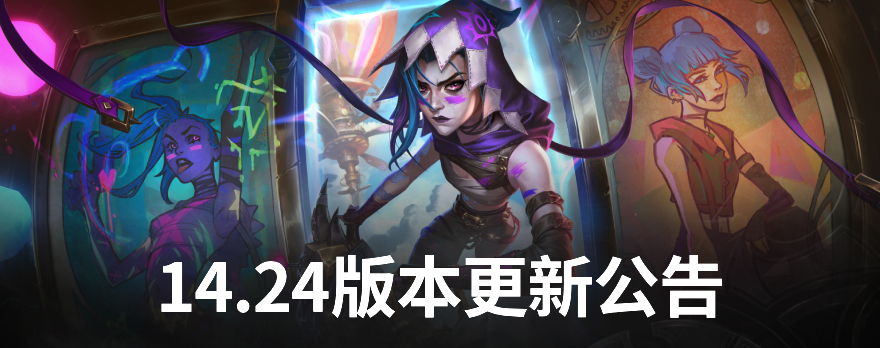

14.24版本公告:维克托更新，首款圣堂级皮肤现已上线!

LOL将在12月12日凌晨0点开始全区停机维护(请注意：12月11日23点将关闭排位赛入口，不会影响正在进行中的排位赛)发布14.24版本，预计停机时间为0:00-12：00
。对于在停机期间结束的活动，其实际结束时间也将提前至停机维护开始时，敬请留意
已知BUG
- 自定义模式无法添加维克托的电脑玩家，我们将尽快修复。
- 进步之桥中泰降使用雪球向敌方英雄冲刺后使用R技能会导致隐身失效，我们将尽快修复。
- 神话商店【灰烬征服者 潘森】 名字错误显示成【灰烬征服者 潘森 余烬觉醒】，我们将尽快修复(12月12日更新)
更新详情